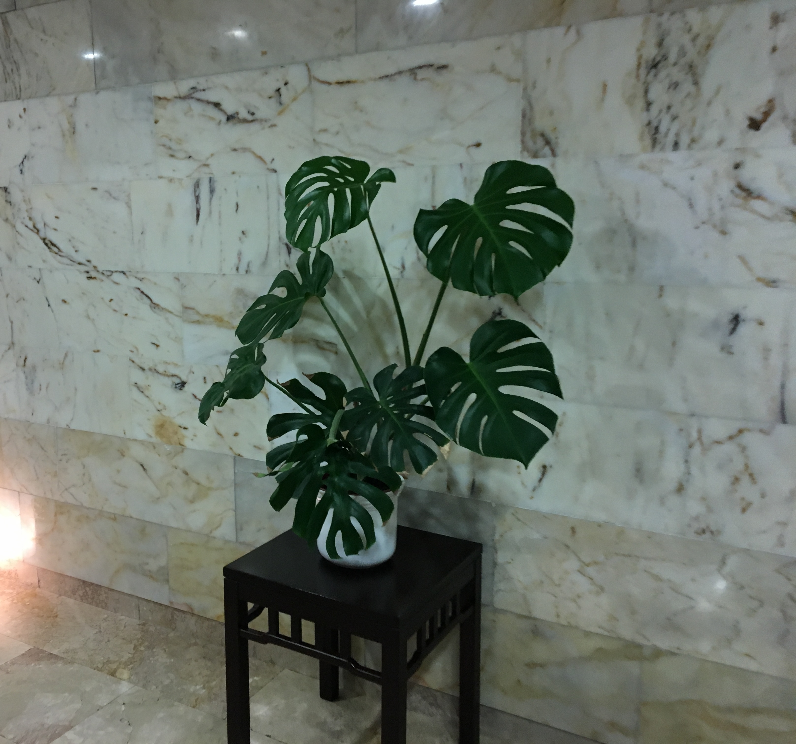
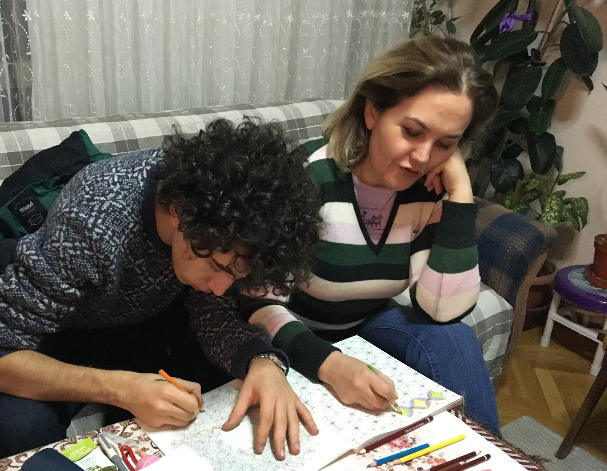
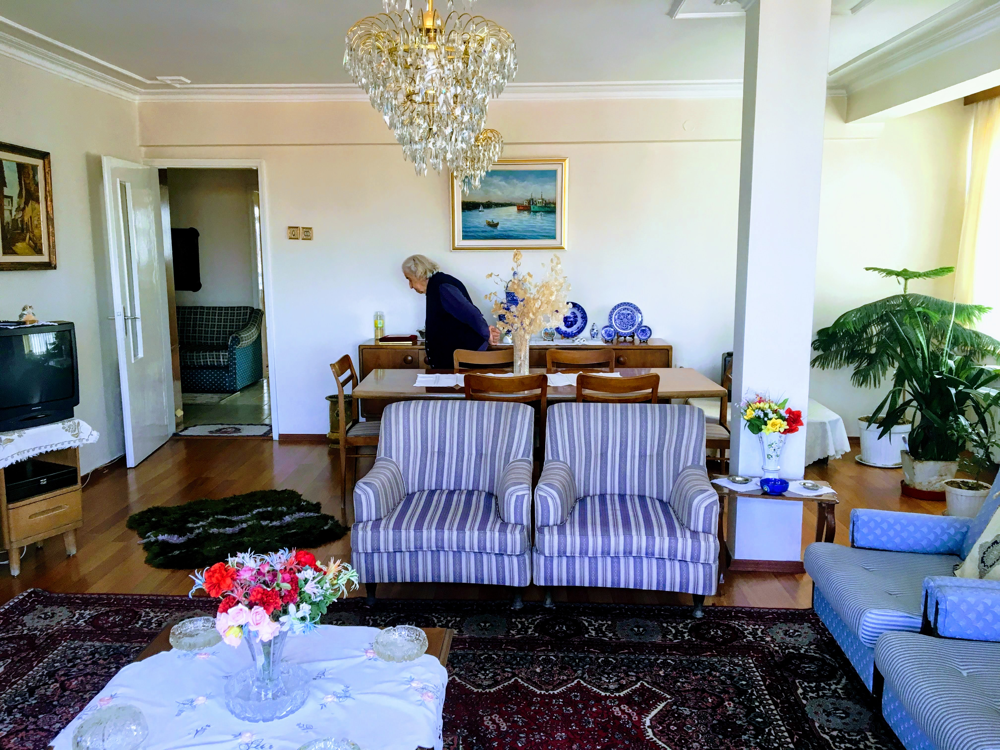

From Amazons to Salons: The Story of the Delicious and Monstrous Devetabanı
I woke up and was looking at the monstera in my apartment this morning and had a sudden realization that sparked a fascinating question: I have seen so many of these plants existing in the salons of Turkish houses, but they are native to deep South American and Asian tropicals. How exactly did they come to Turkish households? This led me to an investigative rabbit hole...
It is fascinating that while growing up, my grandmas had devetabanı, giant kauçuk and many benjamin plants in their apartments. Some might say this was the precursor of the eco-brutalist aesthetic with the concrete apartments in combination with tropical florals.



I was curious when the story and travelogues of these tropical plants to Turkish homes began, so I set out on a journey of discoveries. So here's that story.
First it started with the European tropical plant craze called pteridomania where greenhouses in Europe cultivated these plants they discovered in their colonialist era. Then this coincided with the Ottoman westernization period, so all of these plants were imported to Anatolian pasha's mansions—like the yalıs near the Bosphorus—and the kış bahçeleri and palaces from the New World as well.
This initial introduction was apparently highly restricted to the ultra-wealthy. Then, when the early Turkish Republic was forming, modernized Turkish homes were built as mini-replicas of ultra-wealthy mansions, which led to massive demands and blanket additions of these tropical plants by multiple state-funded domestic nurseries.
The Botanical Pipeline
Here's an interactive map tracing the travel of these plants across the world, passing through the historic European and Levantine botanical giants, and finally settling down into Anatolian eco-brutalist apartments.
(Click on the dots to explore the historical nurseries, origins, and state farms.)
The Botanical Timeline
European commercial nurseries (James Veitch, Conrad Loddiges, Louis van Houtte, Vilmorin-Andrieux) and East India Companies begin the global extraction of tropicals, building the world's largest hot houses and sending plant hunters on private expeditions to supply European royalty.
The patriarch, İstavro Sabuncakis, a famous soap manufacturer in Crete who distilled wildflower essences, sends his 13-year-old son Istirati to Istanbul with 500 gold coins due to political unrest.
Istirati opens his florist shop inside the Aynalı Pasaj. He imports French glasshouses, brings gardeners from Chios to cultivate tropicals, and becomes the official floral decorator for Ottoman Imperial Palaces like Dolmabahçe and Yıldız.
By direct order of Mustafa Kemal Atatürk, Turkey’s first official state nursery is established. Importing Italian horticulturist Leopold Bologna, it lays the groundwork for modern ornamental plant operations.
Atatürk purchases farms in Yalova to mass-propagate ornamental greenhouse plants, shifting them from an elite luxury to an accessible commodity.
Impressed by their work, Atatürk invites Sabuncakis to open a branch in the new capital to landscape major infrastructure projects like the Çubuk Dam and Hippodrome. They later manufacture the wreaths for Atatürk's state funeral.
Private and domestic state sellers push easily cloned plants—devetabanı, kauçuk, and benjamin—heavily onto the market. Since they can be easily cloned via simple stem cuttings, domestic nurseries mass-produce them cheaply for citizens moving into new concrete apartments.